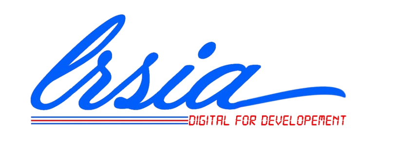

Stage de recherche au LRSIA Research Internship at LRSIA Laboratory
Le LRSIA (Laboratoire de Recherche en Sciences Informatiques et Applications) est un centre de recherche académique situé à l'Université d'Abomey-Calavi (UAC) au Bénin. Il est rattaché à l'IFRI (Institut de Formation et de Recherche en Informatique), où je poursuis mon bachelor en Informatique, avec une spécialisation en Intelligence Artificielle.
The LRSIA (Laboratory of Research in Computer Science and Applications) is an academic research center based at the University of Abomey-Calavi (UAC) in Benin. It is affiliated with IFRI (Institute of Training and Research in Computer Science), where I am pursuing my Bachelor's degree in Computer Science, specializing in Artificial Intelligence.
J'ai le privilège d'effectuer ce stage sous la supervision du Dr. Ratheil HOUNDJI, enseignant-chercheur en Intelligence Artificielle et Maître de Conférences inscrit au CAMES.
I have the privilege of undertaking this internship under the supervision of Dr. Ratheil HOUNDJI, Associate Professor in Artificial Intelligence and researcher accredited by CAMES.

Objectifs et axes de recherche Research focus & Objectives
Durant les trois prochains mois, mes travaux de recherche s'articuleront principalement autour de ces axes fondamentaux :
Over the next three months, my research work will focus primarily on these core tracks:
- La formulation et la modélisation mathématique du problème d'une variante des problèmes de tournées de véhicules (MPVRP-CC).
- L'exploration des variables de séquences basées sur l'insertion en programmation par contraintes (CP) et leur application pour la modélisation efficace des problèmes de routing et de scheduling (ordonnancement).
- La contribution aux divers projets et tâches parallèles qui me seront confiés au sein du laboratoire.
- Formulation and mathematical modeling of a specific variant of Vehicle Routing Problems (MPVRP-CC).
- Exploration of insertion-based sequence variables in constraint programming (CP) and their use for modeling routing and scheduling problems.
- Active contribution to parallel projects and technical tasks assigned by the lab team.